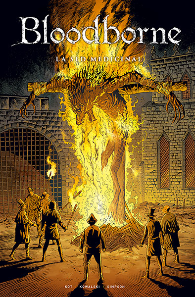
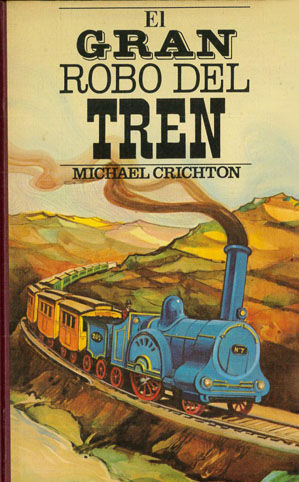
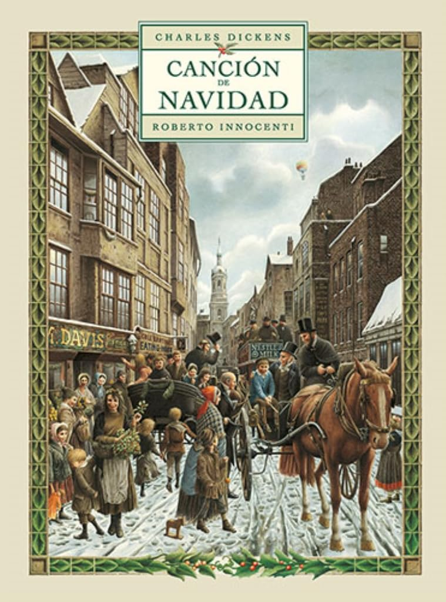

En esta página de mi sitio web llevo un registro de todas mis lecturas, lo que incluye libros de ficción o no, artículos académicos, ensayos, etcétera.
La lectura es un aspecto muy importante en mi vida, tanto a nivel de ocio como de formación.
Como dice un antiguo proverbio japonés: «Lee libros y aumentará tu sabiduría (書を読んで智を増す)».

Bloodborne III: Canción de cuervos
De Ales Kot Piotv. Publicado en 2020
Lectura terminada el 25 de Mayo de 2026
Ficción
Gótico
Cómic

Bloodborne II: La sed medicinal
De Ales Kot Piotv. Publicado en 2019
Lectura terminada el 25 de Mayo de 2026
Ficción
Gótico
Cómic

Estudio en escarlata
De Arthur Conan Doyle. Publicado en 1887
Lectura terminada el 21 de Mayo de 2026
Ficción
Policíaca
Canon holmesiano

El gran robo del tren
De Michael Crichton. Publicado en 1975
Lectura terminada el 12 de Mayo de 2026
Ficción
Policíaca

Egidio, el granjero de Ham
De J. R. R. Tolkien. Publicado en 1949
Lectura terminada el 9 de Mayo de 2026
Ficción
Fantasía

Los mitos de Japón
De Carlos Rubio. Publicado en 2022
Lectura terminada el 5 de Mayo de 2026
No ficción
Mitología japonesa

La señora Firsby y las ratas de NIMH
De Robert C. O'Brien. Publicado en 1971
Lectura terminada el 20 de Marzo de 2026
Ficción
Infantil
Ciencia ficción

Cómo organizar una biblioteca
De Rosa Brunet [et al.]. Publicado en 1986
Lectura terminada el 18 de Marzo de 2026
No Ficción
Biblioteconomía

Maximum Berserk I
De Kentaro Miura. Publicado en 1992
Lectura terminada el 8 de Febrero de 2026
Ficción
Fantasía oscura
Manga

Antología de relatos de detectives
De Antón Chéjov [et al.]. Publicado en 2019
Lectura terminada el 04 de Enero de 2026
Ficción
Policíaca

Canción de Navidad
De Charles Dickens. Publicado en 1843
Lectura terminada el 25 de Diciembre de 2025
Ficción
Cuento de hadas

El Hobbit
De J. R. R. Tolkien. Publicado en 1937
Lectura terminada el 8 de Diciembre de 2025
Ficción
Fantasía
Tierra Media

El Rey Arturo y los caballeros de la tabla redonda
De Pablo Mañé Garzón. Publicado en 1990
Lectura terminada el 16 de Noviembre de 2025
Ficción
Materia de Bretaña

Cátaros: la libertad aniquilada
De Luis Melero. Publicado en 2007
Lectura terminada el 7 de Noviembre de 2025
No ficción
Historia
Cátaros

El maestro del Prado
De Javier Sierra. Publicado en 2013
Lectura terminada el 18 de Octubre de 2025
Ficción
Misterio

La noche
De Guy de Maupassant. Publicado en 1887
Lectura terminada el 16 de Octubre de 2025
Ficción
Terror
Ensayo

Luces de bohemia
De Valle-Inclán. Publicado en 1920
Lectura terminada el 9 de Octubre de 2025
Ficción
Esperpento

Bloodborne I: La muerte del sueño
De Ales Kot Piotv. Publicado en 2019
Lectura terminada el 5 de Octubre de 2025
Ficción
Gótico
Cómic

El entierro de las ratas
De Bram Stoker. Publicado en 1928
Lectura terminada el 4 de Octubre de 2025
Ficción
Terror

El cuarto mono
De J. D. Barker. Publicado en 2017
Lectura terminada el 2 de Octubre de 2025
Ficción
Thiller